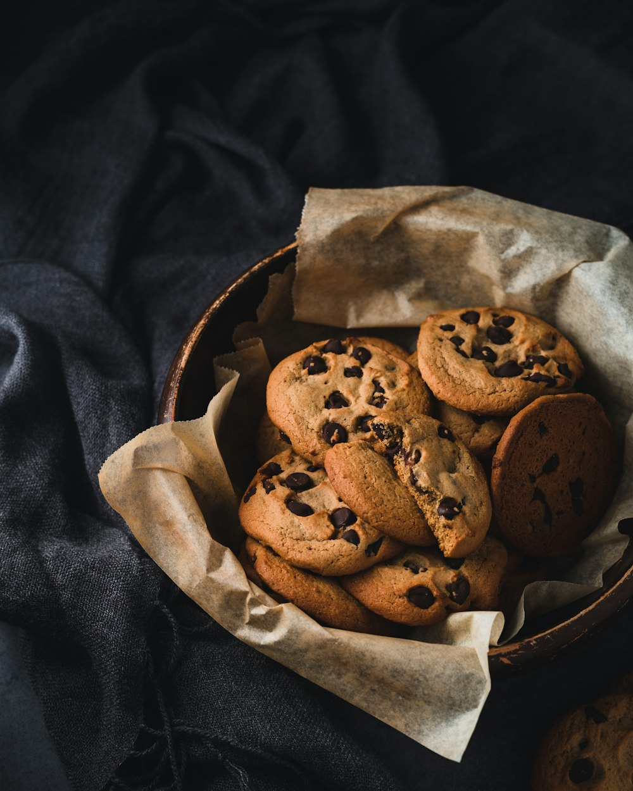
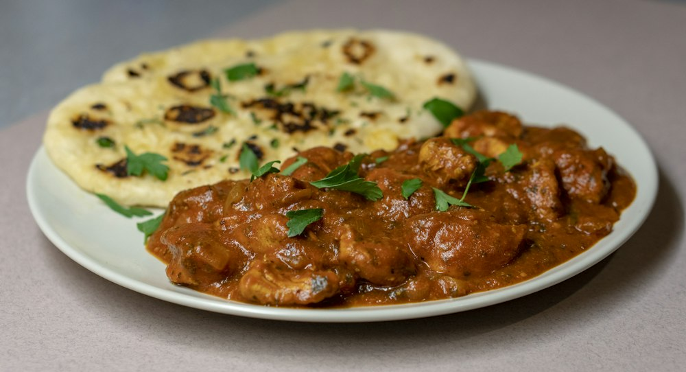
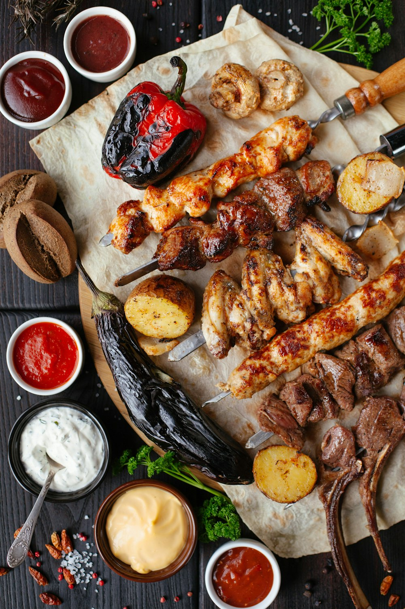
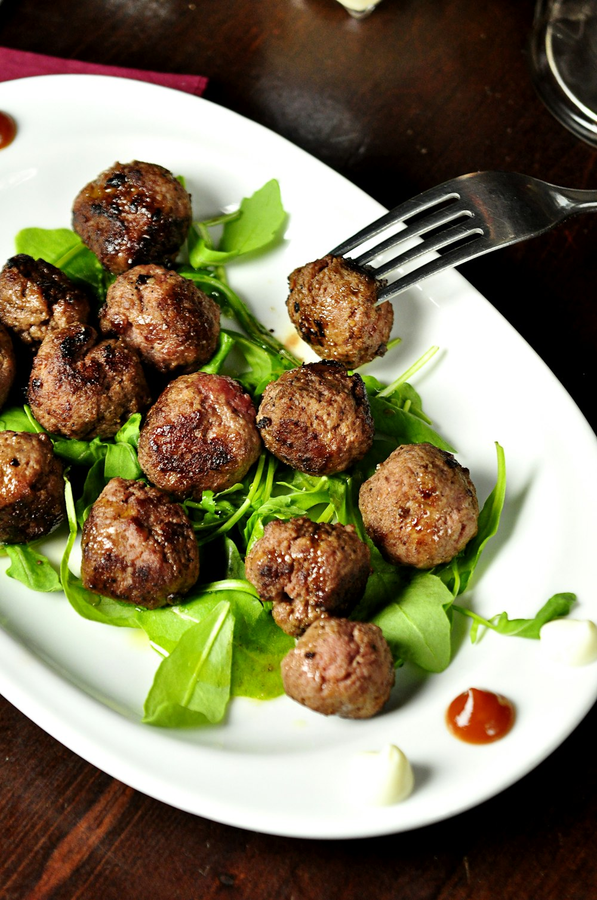

Cardamom Cinnamon Buns

Birthday brunch for Sam. The glaze set beautifully this time.
Note for next time · only you
Proof the shaped buns 15 minutes longer; the middle ones were tight. Change the recipe →
6 cooks since October

Birthday brunch for Sam. The glaze set beautifully this time.
Note for next time · only you
Proof the shaped buns 15 minutes longer; the middle ones were tight. Change the recipe →

Doubled the garlic like v2 says. Worth it.
Note for next time · only you
Try ½ tsp chilli flakes; ¼ was timid. Change the recipe →
Improvised

Halloween cookout. Everything on skewers, nothing on plates.
Grandmother's Slow-Roasted Tomato Sauce for the Freezer v5 · Only me recipe
Friends see the dish and caption, not the recipe.
Freezer's stocked for winter.
Note for next time · only you
Use the smaller roasting tin; the juices caught at the edges. Change the recipe →
Slow Sunday. Dev was right about the cayenne.
Note for next time · only you
Add the feta earlier so it softens. Make my version →

From Serious Eats, halved the chilli for the kids.
Note for next time · only you
Write this one up as my own recipe.
Why: audience is a word on every entry, never an icon alone. The note for next time is the only lifted paper on the page, so "only you" reads as a different kind of thing from the caption your friends see. No ratings or counts.
Log what you cook: a recipe, a link or something improvised. Only you see it unless you share it.
Add to Journal